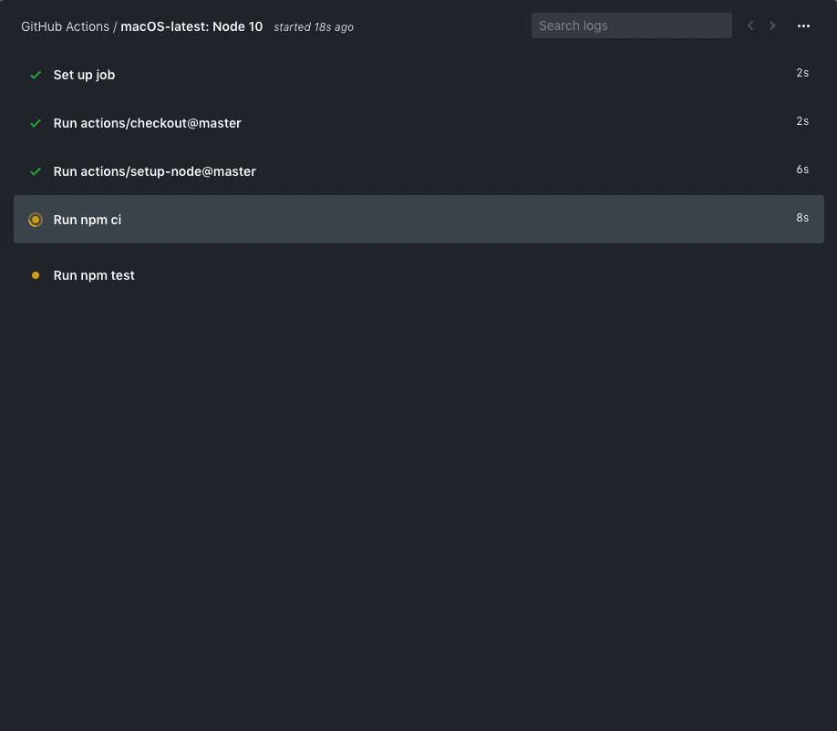

Yazılım Gündemi - 5
5-11 Ağustos 2019
İçindekiler
< Önceki Gündem | 5-11 Ağustos 2019 | Sonraki Gündem >
1 GitHub Actions artık CI/CD süreçlerini destekliyor
GitHub 8 Ağustos tarihinde kendi ofislerinde bir etkinlik gerçekleştirdi. Etkinlik aynı zamanda canlı olarak YouTube üzerinden de yayınlandı. Etkinliğin asıl amacı yeni bir ürün/hizmet duyurmaktı fakat öncesinde GitHub'ın bu yıl boyunca yaptığı şeylerin bir özetini geçtiler. Yayın başında hemen duyursalar etkinlikler biterdi çünkü :). GitHub için 2019 yılı böyle geçiyormuş:
- Özel depoların (private repository) ücretsiz yapılması,
- Package Registry hizmetinin duyurulması,
- Dependabot projesi,
- Sponsors özelliğinin duyurulması,
- Pull Panda'nın satın alınması,
- GitHub Desktop 2.0 sürümünün duyurulması,
- 100'ün üzerinde üründe iyileştirmeler,
- Bu hafta 40.000.000 geliştirici sayısına ulaşmışlar.
Etkinlikte söylememişler doğal olarak ama bir de Amerika'nın ambargo uyguladığı ülkelerde yaşayan geliştiricilerin kodlarına el koyulması olayı var. Yazılım Gündemi - 3 yazısında detaylıca anlatmıştım.
Gelelim etkinlikte tanıtılan yeni özelliğe: GitHub Actions servisi artık Continuous Integration ve Continuous Deployment süreçlerini destekliyor. Yani artık bu süreçleri işletebilmek için travis-ci vb. gibi servisler yerine direkt GitHub içindeki Actions servisi ile yapabilecekmişiz. Bazı özellikleri şu şekilde:
- Matrix builds ile projenizin birden çok sürümünü aynı anda test etme,
- Canlı log kayıtları,
- Kod yazar gibi Action yazabilme

Diğer özellikler için konu başlığına eklediğim bağlantıya tıklayabilirsiniz. GitHub Actions henüz beta olduğu için bu özellikleri kullanabilmeniz için Beta'ya kayıt yapmanız gerekiyor: https://github.com/features/actions.
2 PHP topluluğundaki gruplar ve P++ meselesi
Bu hafta PHP Wiki'sinde yayınlanan sayfaya göre PHP topluluğunda iki grup varmış. İlk grup, PHP'nin geçmişten gelen bazı özellikleri ve bakış açılarını terk etmesi gerektiğini, daha kesin tiplendirilmiş bir dil olması gerektiğini; diğer grup ise PHP'nin geçmişten gelen felsefesini ve özelliklerini korumak gerektiğini savunuyor. Elbette böyle bir tartışmada "doğru" ya da "yanlış" taraf yok. Herkesin kendine göre haklı nedenleri var.
P++'da tam olarak bu nedenden dolayı yapılmak istenen bir PHP lehçesi. Aklımıza ilk geldiği gibi bir PHP 'fork'lanması, takımların ve projelerin ayrılması durumu henüz söz konusu değil yani. P++ henüz bir kod ismi, kesin olarak bu isim belirlenmedi ama bence bir kere bu şekilde duyurulduysa böyle devam edecektir. P++, bildiğimiz PHP'ye göre çok daha sıkı kuralları olan ve farklı özelliklere sahip bir lehçe olacak gibi duruyor. P++ dosyalarını işaretlemek için şöyle bir yöntem önerilmiş:
<?p++?> <?php echo "Merhaba TeknoSeyir!" ?>
PHP mail grubunda ve Reddit gibi platformlarda tartışmalar devam ediyor. Bakalım ne olacak…
3 Visual Studio Code Temmuz 2019 güncellemesi yayınlandı
4 Diğer Haberler
- PHP 7.4.0 Beta 2 yayınlandı, değişiklik notları, indirme bağlantıları.
- PHP-FIG (Framework Interop Group) topluluğu PSR-12 (Genişletilmiş Kod Stili Rehberi) standardını kabul etti.
- Alman Havacılık Merkezi (German Aerospace Center - DLR), CosmoScoutVR isimli modüler sanal evren projesini açık kaynak olarak yayınladı.
- Microsoft, Azure Security Lab hizmetini duyurdu ve açık bulanlara verilen ödülü arttırdı.
- ASP.NET Community Standup yeni bölümü yayınlandı: ASP.NET Core A to Z eBook with Shahed Chowdhuri.
- NVIDIA açık kaynak sürücülere destek için donanımsal dökümanlar paylaşmaya başladı.
- Gleam programlama dilinin v0.3 sürümü yayınlandı, GitHub Deposu.
- Git deponuzun tarihçesini düzenleme olanacağı sunan araç açık kaynak olarak yayınlandı: Git-Revise.
- BlazingSQL isimli donanım hızlandırmalı SQL motoru açık kaynak olarak yayınlandı, GitHub Deposu.
- Bulut uygulamaları için yayınlama (deploy) işlerini kolaylaştırma iddiası taşıyan IC isimli proje açık kaynak olarak yayınlandı, GitHub Deposu.
- Android uygulama geliştirme için mail gönderme kütüphanesi açık kaynak olarak yayınlandı: maildroid.
- Terminal çıktılarında tıklanabilir linkler oluşturmaya yarayan kütüphane açık kaynak olarak yayınlandı: tty-link.
- Jekyll 4.0.0.pre.beta1 sürümü yayınlandı.
- JavaScript için yeni bir para birimi kütüphanesi yayınlandı: Cashify.
- Vue-Router v3.1.0 sürümü çıktı.
- Kotlin ile yazılmış shell Kash, v1.14 sürümünü çıkardı.
- VectorClass kütüphanesinde büyük değişiklikler var.
- Lazarus, 2.0.4 sürümünü duyurdu, Değişiklik notları.
- OpenAPI Generator 4.1.0 sürümü çıktı.
5 Lisans

Yazılım Gündemi - 5 yazısı Eren Hatırnaz tarafından Creative Commons Atıf-GayriTicari-AynıLisanslaPaylaş 4.0 Uluslararası Lisansı (CC BY-NC-SA 4.0) ile lisanslanmıştır.